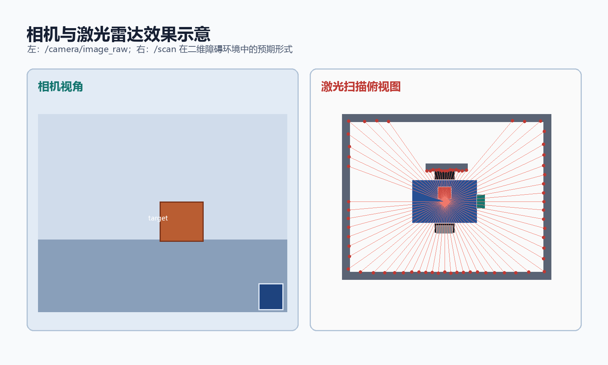

步骤 5：激光与相机插件
前置条件：完成步骤 4。 本步目标：让 Gazebo 中的激光雷达和 RGB 相机发布标准 ROS 话题。 预计时间：40-60 分钟。
1. 激光雷达原理
Gazebo 的 ray 传感器从激光原点发出多条虚拟射线，检测与场景障碍物的交点，并生成一串距离值。
graph LR
A[laser_frame] --> B[360 条虚拟射线]
B --> C[range 距离数组]
C --> D[sensor_msgs/LaserScan]
D --> E[/scan/]
LaserScan 中最关键的数据：
| 字段 | 含义 |
|---|---|
header.stamp |
扫描时间 |
header.frame_id |
激光坐标系 |
angle_min、angle_max |
扫描角范围 |
angle_increment |
相邻射线夹角 |
range_min、range_max |
最小和最大量程 |
ranges[] |
每个角度的距离 |
激光的 frame_id 必须存在于 TF 树中，否则 SLAM 和导航无法把激光数据放到机器人坐标系里。
2. 激光插件配置
<gazebo reference="laser_frame">
<sensor type="ray" name="laser_sensor">
<always_on>true</always_on>
<update_rate>10</update_rate>
<visualize>false</visualize>
<ray>
<scan>
<horizontal>
<samples>360</samples>
<resolution>1</resolution>
<min_angle>-3.14159265359</min_angle>
<max_angle>3.14159265359</max_angle>
</horizontal>
</scan>
<range>
<min>0.10</min>
<max>10.0</max>
<resolution>0.01</resolution>
</range>
</ray>
<plugin name="laser_controller" filename="libgazebo_ros_laser.so">
<topicName>/scan</topicName>
<frameName>laser_frame</frameName>
</plugin>
</sensor>
</gazebo>本虚拟机或本仓库使用的 Gazebo ROS 版本没有安装
libgazebo_ros_ray_sensor.so，因此使用仓库现有示例中的libgazebo_ros_laser.so。两种插件的功能相同，区别是参数名和输出类型配置方式不同。
参数影响：
| 参数 | 增大后的影响 | 建议 |
|---|---|---|
samples |
角度更密，数据更精细，CPU 更高 | 初学用 180 或 360 点 |
update_rate |
数据更快，计算量更高 | 初学用 5-10 Hz |
max |
探测距离更远 | 室内用 8-10 m |
visualize |
Gazebo 中显示射线 | 调试时打开，平时关闭 |
3. 相机传感器配置
<gazebo reference="camera_link">
<sensor type="camera" name="camera_sensor">
<always_on>true</always_on>
<update_rate>30</update_rate>
<visualize>false</visualize>
<camera name="camera">
<horizontal_fov>1.047</horizontal_fov>
<image>
<width>640</width>
<height>480</height>
<format>R8G8B8</format>
</image>
<clip>
<near>0.05</near>
<far>20.0</far>
</clip>
</camera>
</sensor>
</gazebo>相机参数：
horizontal_fov：水平视场角，约为 60 度；width、height：图像分辨率；near、far：可见距离范围；update_rate：图像帧率。
相机分辨率提高会明显增加 Gazebo 渲染和图像传输负载，初学者先用 640 x 480。
4. 相机插件配置
<plugin name="camera_controller" filename="libgazebo_ros_camera.so">
<cameraName>camera</cameraName>
<imageTopicName>image_raw</imageTopicName>
<cameraInfoTopicName>camera_info</cameraInfoTopicName>
<frameName>camera_link</frameName>
</plugin>话题图：
graph LR
S[Gazebo 相机传感器] --> P[camera 插件]
P --> I[/camera/image_raw/]
P --> C[/camera/camera_info/]
I --> V[rqt_image_view]
C --> V2[视觉算法]
camera_info 包含焦距、主点、畸变参数，真实相机标定和视觉定位都会使用。
5. 数据流验证
传感器正确输出后，相机和激光的数据形态可参考下图：

启动仿真后：
rostopic list | grep -E "scan|camera"
rostopic info /scan
rostopic info /camera/image_raw
rostopic info /camera/camera_info
rostopic hz /scan
rostopic hz /camera/image_raw
rostopic echo -n 1 /scan检查 TF：
rosrun tf tf_echo base_link laser_frame
rosrun tf tf_echo base_link camera_link查看图像：
rosrun rqt_image_view rqt_image_view在窗口中选择 /camera/image_raw，应看到 Gazebo 场景图像。
6. 常见问题
| 现象 | 原因 | 处理 |
|---|---|---|
没有 /scan |
激光插件未加载或 topic 名错误 | 检查 Gazebo 日志与 <topicName> |
/scan 无数据 |
range_min 到 range_max 内没有障碍 |
在场景中添加墙体或靠近地面 |
/scan 频率低 |
点数或更新率过高 | 降低 samples 或 update_rate |
| 相机没有图像 | 插件或话题名错误 | 检查 /camera/image_raw |
| 图像卡顿 | 分辨率过高或 CPU 不足 | 降低分辨率与帧率 |
| 激光建图错位 | frameName 与 TF 不一致 |
统一起见使用 laser_frame |
| 相机坐标错误 | 相机 TF 或安装方向错误 | 检查 camera_joint 的 origin 和 rpy |
7. 本步验收
- [ ]
/scan话题存在且有 360 个范围值； - [ ]
/camera/image_raw和/camera/camera_info存在； - [ ]
tf_echo base_link laser_frame能查询成功； - [ ]
tf_echo base_link camera_link能查询成功； - [ ]
rqt_image_view能看到相机图像； - [ ] 能解释传感器数据为什么要绑定 frame。
- 上一步：差速驱动与里程计
- 返回教程总览
- 下一步：步骤 6：世界文件与 launch